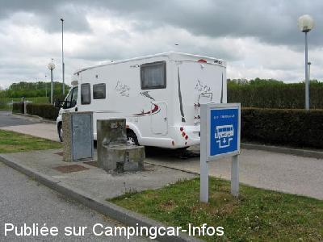

AA = Aire de services sur autoroute de :
A29 Le Havre=>Abbeville BOLLEVILLE
(N° 66)
Accès/adresse :
A 29 LE HAVRE <=> ABBEVILLE BOLLEVILLE
Accès les deux sens
Accès les deux sens
Latitude : (Nord) 49.61428° Décimaux ou 49° 36′ 51′′
Longitude : (Est) 0.54547° Décimaux ou 0° 32′ 43′′
Tarif :
Services :


Autres informations :

Le 05/05/2010 par Dominique
de
eastwood
le 30/03/2016 :
Borne de vidange peu ragoutante, d'une saleté repoussante (sert principalement aux bus de tourisme) une large flaque de couleur bleue colorait le sol.... les WC sont dans une cavité creuse où surnagent toute sorte de choses... le robinet est un robinet normal qui se tourne.... bref, ça a le mérite d'exister mais c'est innommable .... à la date de notre passage, il y avait de l'eau et ça fonctionnait (26 mars 2016)
Borne de vidange peu ragoutante, d'une saleté repoussante (sert principalement aux bus de tourisme) une large flaque de couleur bleue colorait le sol.... les WC sont dans une cavité creuse où surnagent toute sorte de choses... le robinet est un robinet normal qui se tourne.... bref, ça a le mérite d'exister mais c'est innommable .... à la date de notre passage, il y avait de l'eau et ça fonctionnait (26 mars 2016)
de
Philhonfleur
le 20/05/2013 :
Uniquement si on n'a pas trouvé mieux ailleurs. N'a que le mérite d'exister. Saleté repoussante.
Uniquement si on n'a pas trouvé mieux ailleurs. N'a que le mérite d'exister. Saleté repoussante.
de
Dominique
le 05/05/2010 :
Vidanges eaux usées et WC + plein d'eau potable, le tout gratuitement + Tous les services d'une station service sur autoroute à deux pas de l'aire.
Vidanges eaux usées et WC + plein d'eau potable, le tout gratuitement + Tous les services d'une station service sur autoroute à deux pas de l'aire.
de
cc76
le 05/12/2007 :
Sortie Aire de Bolleville. Carburant, café, aire de pique-nique
Sortie Aire de Bolleville. Carburant, café, aire de pique-nique